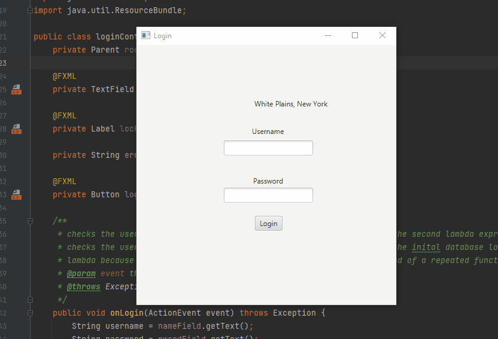
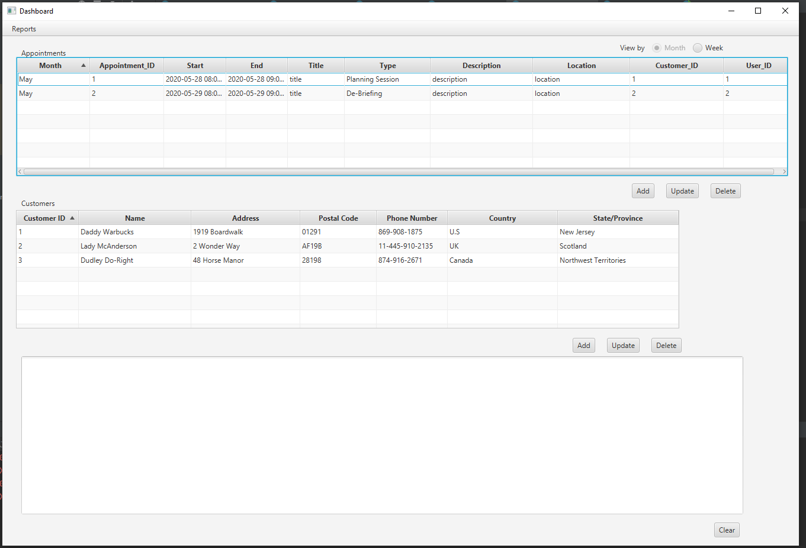
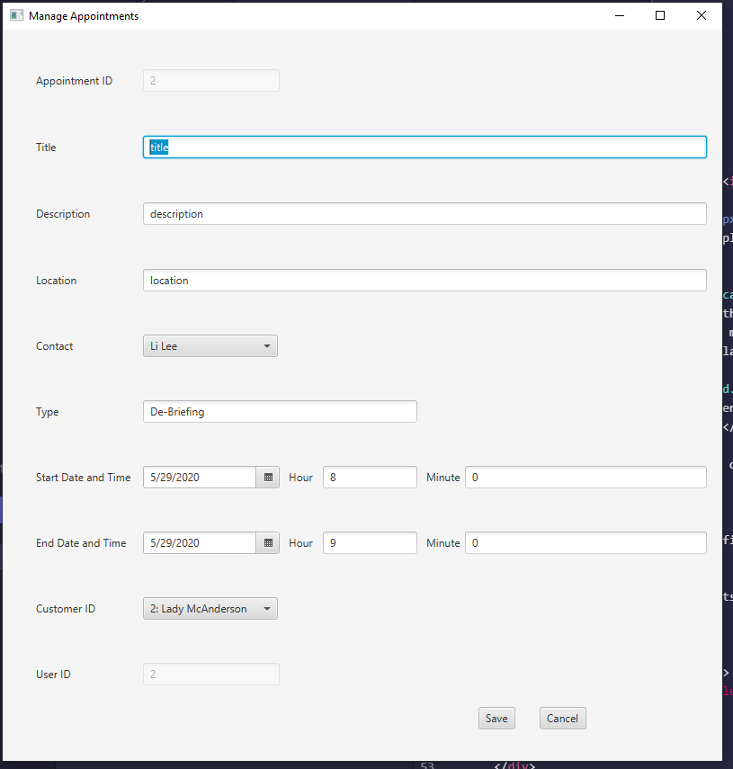
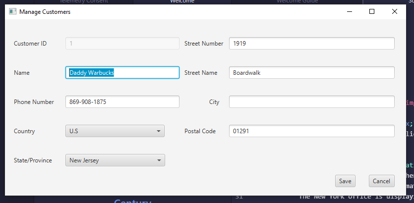
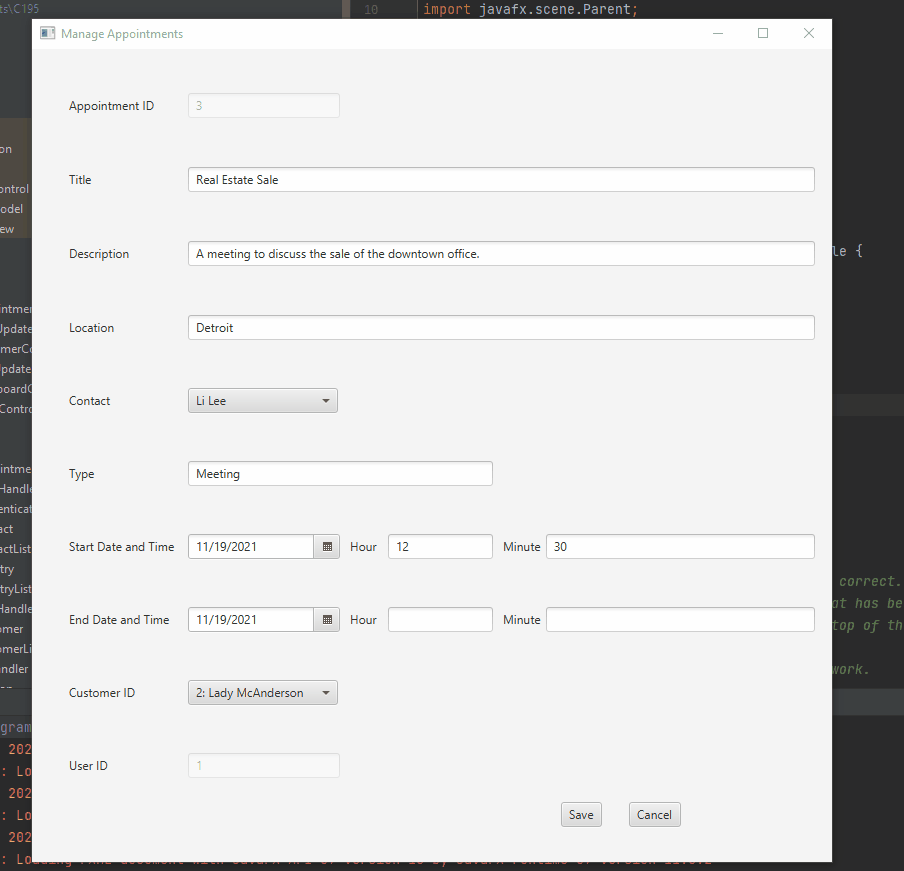
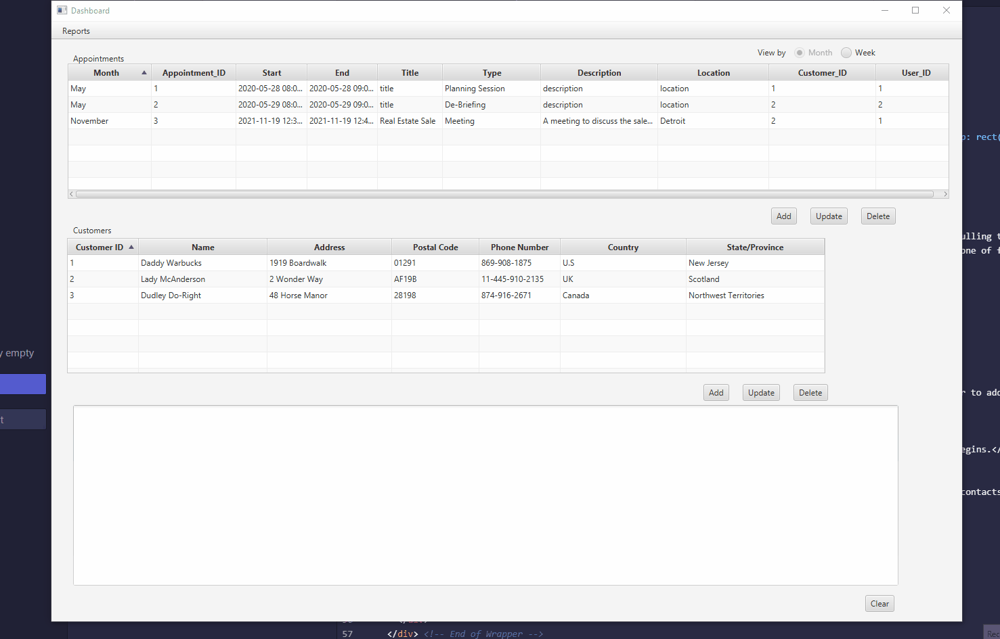

MistRoller
This is a scheduling application I built while studying at WGU.
The scheduler first authenticates the user. This is done so by querying a database of users and pulling the passwords matched with the user. If the password matches, access is granted. This assignment assumed this would be used at one of four offices. The New York office is displaying because my personal computer is in the Eastern time zone.
This is the main dashboard of the application.
This is the screen to edit and add appointments.
This is the screen to edit and add contacts.
The main functionality of the program is to act as a CRUD application. The program allows the user to add both contacts and appointments.
Warnings are added if field has problematic information such as an appointment ending before it begins.
Finally, several reports can be run giving a little bit more information on the appointments and contacts that have been entered into the system. There is also functionality to display the appointment by week instead of by year.